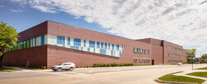

.png)
This is my dog Teddy. She's our immediate family's first dog, and she's 11 years old. She's a toy poodle and is very friendly while keeping to herself. She loves to cuddle and take naps with anyone nearby.
.png)
This is our dog Lexi. She's our immediate familiy's second dog, and she's 9 years old. She's a shih tzu poodle and is very energetic and playful. She loves to run around and is a bit more hyper while also being open to cuddles.
Before college, I attended John Hancock College Prep in Chicago, Illinois and graduated 2023. I was able to learn my engineering related skills such as having an introduction into AutoCAD(3d modeling software) and learning the basics of teamwork engineering through collaborative projects such as drafting and creating a working claw machine. I was also able to take AP classes such as AP Computer Science A and AP Calculus AB. 
I was a member of Boy Scouts organizations since I was 7. I've learned many new skills from it, such as how to lead, camping outdoors, and many volunterring service oppurtunities. Once a year, I would go to a summer camp for a week with my troop and other scouts from around the country. We would set up our own tents, cook our own food, and do many activities such as hiking, swimming, and cooking.

I grew up with my parents and my younger sister. We used to have a giant backyard jungle gym that I used to spend hours on. We used it all throughout the year, building snow forts in the winter and water slides in the summer. It was a fun way that I had stayed active as a kid.
I've worked with a company called At Your Service for the past year. Most of my days working with them involve me aiding in providing guest servies for numerous events for two staduims in Chicago. Usually, these events are for concerts and sports games for basketball, baseball, and hockey. I enjoy the job and the opportunities it has provided me. I've been able to meet many new people, experience exciting events that I would have otherwise not known about, and been able to share my experiences with my friends and family.